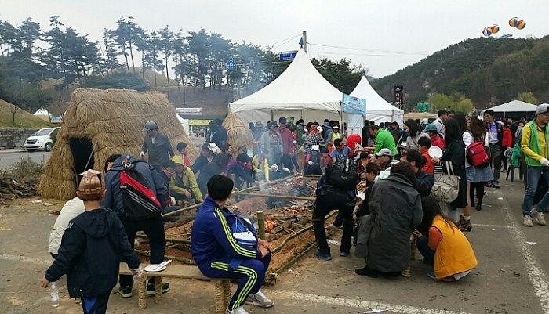
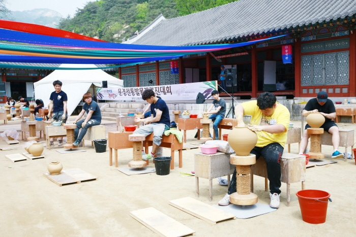
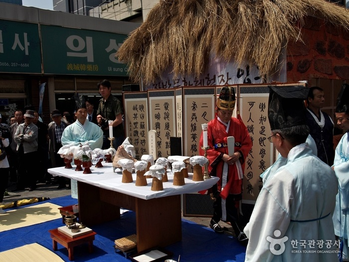
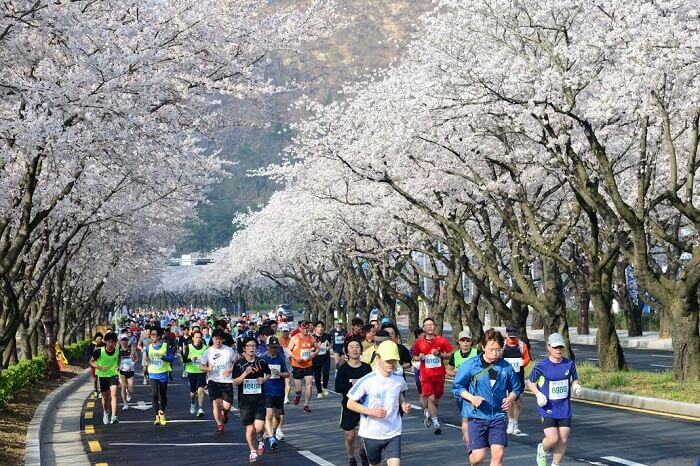
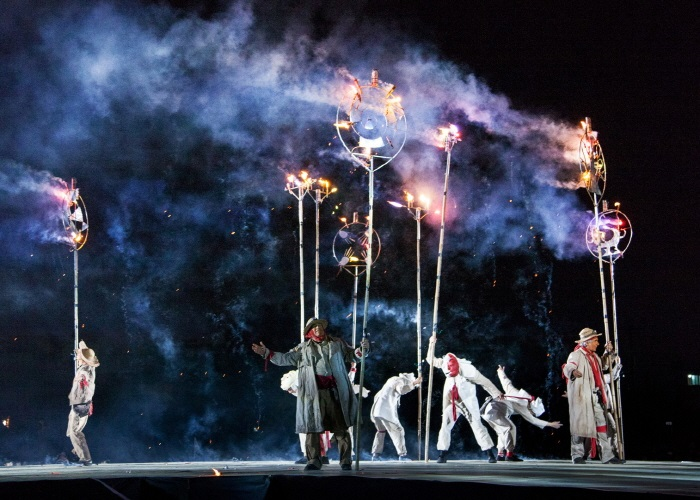
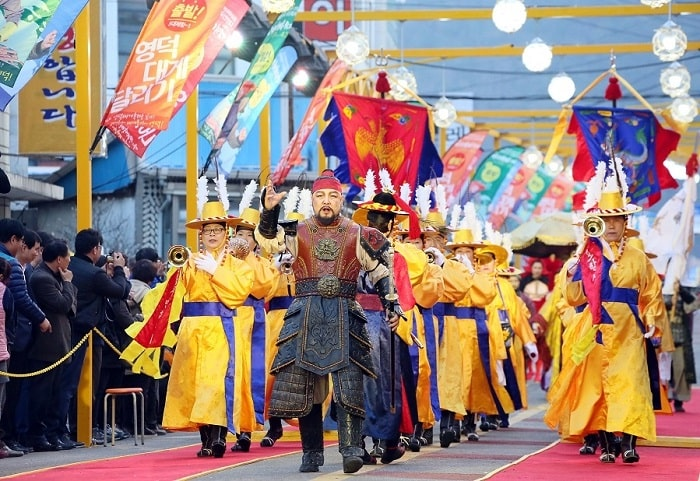

Du lịch Hàn Quốc
Welcome to Korea
Welcome to Korea

Một trong những lễ hội mùa xuân Hàn Quốc lâu đời nhất là lễ hội lửa Jeju. Đây là lễ hội truyền thống của người dân xứ Hàn với mong muốn cầu nguyện sức khỏe và mùa màng bội thu. Tham gia ngày hội, du khách sẽ được tìm hiểu nét văn hóa truyến thống Jeju cùng hoạt động đốt lửa thú vị. Giữa tiết trời dịu mát, khung cảnh thiên nhiên hòa trong sắc đỏ của lửa khiến cảnh vật càng thêm quyến rũ.
Lễ hội văn hóa Yeongam Wangin là lễ hội Hàn Quốc truyền thống. Trong lễ hội diễn ra hoạt động nhằm tri ân, tưởng nhớ thành tựu của Tiến sĩ Wangin – người đã tới Nhật Bản để truyền bá về tri thức, văn hóa và nghệ thuật. Du lịch Hàn Quốc tháng 4, khi sắc anh đào phủ khắp, du khách sẽ được tham gia cuộc diễu hành dưới phố đầy mới lạ. Cùng với đó là hàng loạt màn trình diễn nghệ thuật đường phố đặc sắc chờ bạn khám phá.
Những tín đồ yêu lịch sử chắc chắn không thể bỏ qua lễ hội trải nghiệm Goryeong Daegaya. Đây là dịp để du khách có cơ hội để tìm hiểu về lịch sử và nền văn hóa của vương quốc Daegaya thời cổ đại. Một lễ hội mùa xuân Hàn Quốc đậm chất xưa cũ với không gian hoài cổ, lắng đọng như gieo vào lòng người chút xao xuyến lạ kì. Tham gia ngày hội, các chương trình nghệ thuật mang đến một cái nhìn rất lạ về xứ củ sâm. Cùng với đó bạn có cơ hội tự tay làm gốm và trải nghiệm lối sống của người Hàn ngày xưa tại một ngôi làng nhân bản của Vương quốc Daegaya.
Tham gia tour du lịch Hàn Quốc đến Gyeongsangbuk-do mùa xuân, đừng bỏ lỡ lễ hội truyền thống Mungyeong Chasabal. Một lễ hội giúp bạn hiểu hơn về văn hóa gốm sứ Mungyeong. Đặc biệt, địa điểm diễn ra lễ hội là khu vực nằm nép mình dưới chân dãy núi Baekdudaegan, mang đến cho khách tham quan cảm nhận về cảnh quan thiên nhiên lãng mạn. Tại lễ hội bạn sẽ được các nghệ nhân giới thiệu kinh nghiệm làm gốm cũng như được tận mắt chiêm ngưỡng sản phẩm gốm sứ cao cấp tại Hàn.
Với khách du lịch, có thể ít bạn nghe đến cái tên Daegu Yangnyeongsi. Song đây được xem là lễ hội mùa xuân Hàn Quốc truyền thống và lâu đời bậc nhất. Bạn sẽ được khám phá khu chợ thảo dược Daegu Yangnyeongsi với các loại dược liệu quý hiếm dùng để chữa bệnh. Nền văn hóa y học cổ truyền Hàn Quốc được tái hiện một cách sinh động và trực quan trong lễ hội độc đáo này.
Lễ hội marathon quốc tế là một trong những lễ hội mùa xuân hàn quốc thu hút rất đông người tham gia. Đây là ngày hội diễn ra cuộc thi chạy marathon dài 42,2km. Lộ trình đường đua đi qua trung tâm thành phố Seoul, xuất phát từ quảng trường Gwanghwamun, dọc theo suối Cheonggyecheon đến sân vận động Olympic tại khu liên hợp thể thao Seoul.
Bên cạnh chạy đường dài, cuộc đua này còn có lộ trình Seoul Challenge 10k. Phần thi này chỉ kéo dài 10 km bắt đầu từ Công viên Olympic đến Khu liên hợp thể thao Seoul. Điểm đặc biệt thu hút khách du lịch tham gia trong ngày hội này chính là những con đường trải đầy hoa anh đào. Hai hàng anh đào rực rỡ khoe sắc, tỏa ngát hương thơm như thúc giục bước chân người chạy đua.
Đến Gangwon, khách du lịch sẽ được tham gia lễ hội mùa xuân Hàn Quốc đặc sắc mang tên lễ hội kịch câm Chuncheon. Đây là một trong những lễ hội biểu diễn nghệ thuật hấp dẫn bậc nhất xứ củ sâm. Xuyên suốt thời gian diễn ra, hàng loạt những màn trình diễn với đa dạng các thể loại khiến du khách thích thú. Những màn kịch câm, biểu diễn âm nhạc, khiêu vũ, các bộ phim ngắn làm du khách chứng kiến phải thốt lên trầm trồ và ngưỡng mộ. Nếu có dịp đến Hàn, đây thực sự là lễ hội đáng để bạn tham gia.
Là một trong những đặc sản mùa xuân xứ Hàn, lễ hội cua tuyết Yeongdeok là dịp lý tưởng để du khách tận hưởng món ăn nổi tiếng này. Diễn ra tại cảng Gangguhang, tại đây mọi người được tham gia sự kiện diễu hành đường phố, đấu giá sản phẩm cùng hoạt động ca hát, giải trí vui nhộn. Và điều đặc biệt, thu hút nhất chính là việc thưởng thức cua tuyết, những miếng cua chắc ngọt, bổ dưỡng khiến du khách càng ăn càng mê.
Trải nghiệm lễ hội mùa xuân Hàn Quốc, nét văn hóa truyền thống độc đáo mê hoặc lòng người khiến bao du khách lưu luyến không muốn rời đi. Nét văn hóa độc đáo cùng trò chơi thú vị trong không gian lịch sự sâu lắng, xứ Hàn là điểm dừng chân không thể bỏ qua trong chuyến đi thanh xuân của bạn.
GỢI Ý TOUR DU LỊCH HÀN QUỐC |
|---|
>> Hà Nội – Hàn Quốc: Seoul – Nami – Everland 5N Bay T’way Air
|
Top 20 điểm tham quan nhất định phải ghé thăm trong hành trình chinh phục Seoul

Điện thoại: 0903357616
Email: thaontps24690@fpt.edu.vn